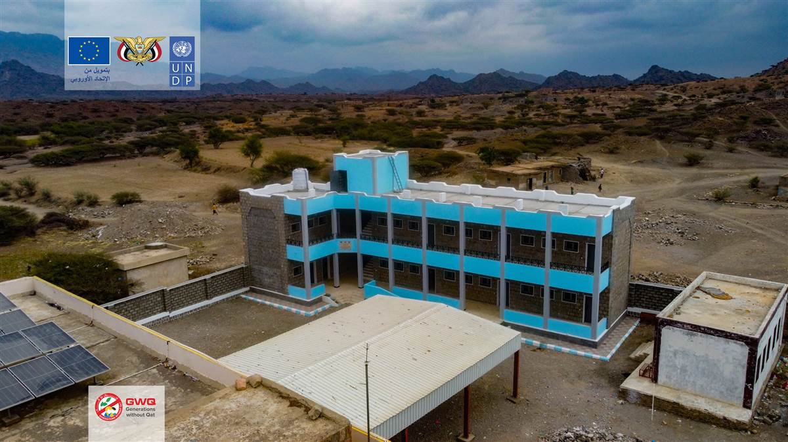

افتتاح مبنى مدرسة ابن خلدون الجديد بمحافظة لحج
إنشاء فصول دراسية متكاملة في مديرية المضاربة ورأس العارة بمحافظة لحج.
لحج اليمن
500+ مستفيد
نحن منظمة "أجيال بلا قات"، مبادرة شبابية تأسست عام 2018 بهدف التوعية بمخاطر القات وتأثيره السلبي على الفرد والمجتمع.
نعمل من خلال برامج توعوية وتدريبية وتأهيلية لخلق بدائل إيجابية عن تعاطي القات، مع التركيز على فئة الشباب والأطفال.
إنشاء فصول دراسية متكاملة في مديرية المضاربة ورأس العارة بمحافظة لحج.
تركيب 425 وحدة إنارة شمسية و27 عمود جديد مع صيانة الأعمدة القائمة.
ندوة لتعزيز مشاركة المرأة في الإغاثة والإنعاش والسلام في تعز
بعد مشاركتي في برنامج التوعية المدرسية، أصبحت أكثر وعياً بمخاطر القات وأستطيع الآن تقديم النصح لأصدقائي وعائلتي. شكراً لكم على هذه الفرصة.
طالب - مشروع التوعية المدرسية
مشروع تمكين المرأة غير حياتي تماماً، تعلمت حرفة جديدة وأصبح لدي مصدر دخل يساعدني في إعالة أسرتي بعد وفاة زوجي. جزاكم الله خيراً.
مستفيدة - مشروع تمكين المرأة
بعد تحويلي مزرعتي من القات إلى الفواكه، زاد دخلي بنسبة 40% وأصبحت منتجاتي مطلوبة في السوق المحلي. نادم أنني لم أفعل هذا من قبل.
مزارع - مشروع الزراعة البديلة